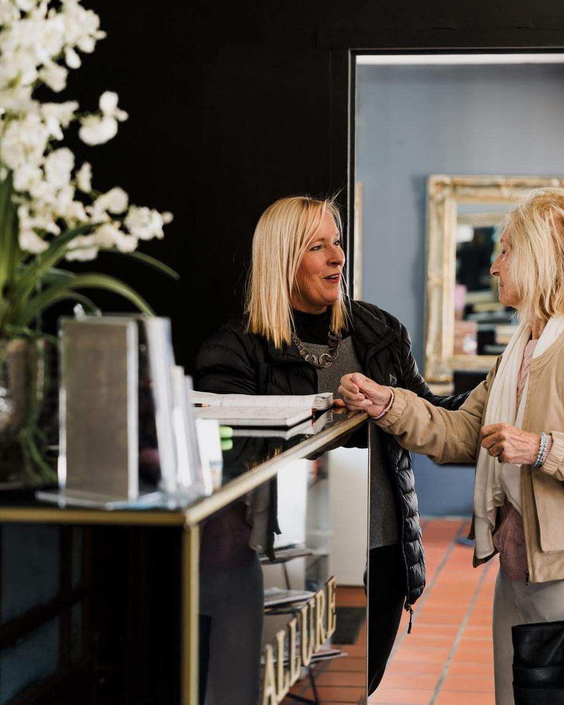
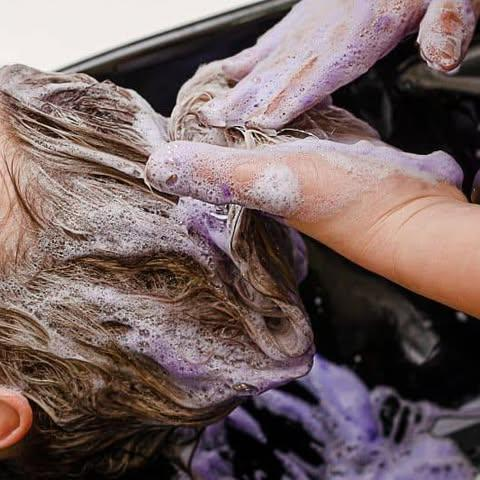
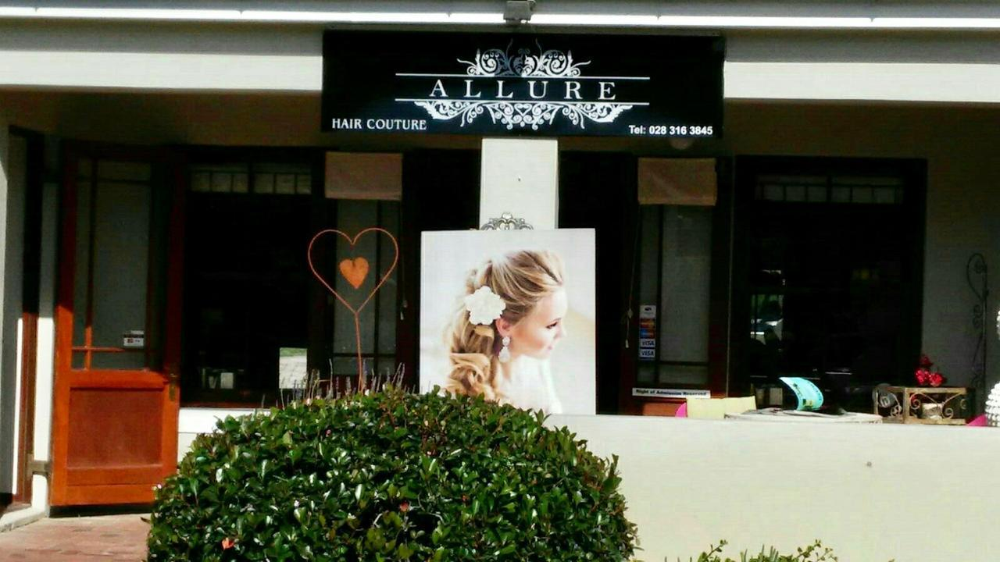

Listen before creating
Good work starts with context: how you wear your hair, what it needs, what you love and what you never want repeated.
Our salon · Our people
Allure is a boutique Hermanus salon where technique begins with listening—and every transformation is shaped around the person wearing it.

The Allure story
Allure Hair Couture grew from a simple belief: beautiful hair is not a formula applied to everyone. It is a collaboration—part technical judgement, part creative instinct, and always grounded in the life of the person in the chair.
From its home at Hemel-en-Aarde Village, the salon has become known for cutting, colour, styling, bridal work and special-event hair. Public posts marked a decade since the dream of opening a little salon became real; the philosophy remains intimate, considered and unmistakably human.
Here, the consultation matters as much as the finish. Texture, condition, routine and ambition are read together before a single creative decision is made.
Hairdressing at its best is not about changing who you are. It is about revealing the version that feels most like you.
What guides us
Allure’s public work spans cuts, colour, up-styles, bridal hair and special events. Across every discipline, three ideas hold the work together.
Good work starts with context: how you wear your hair, what it needs, what you love and what you never want repeated.
Precision matters, but only when it produces hair that feels believable, wearable and entirely your own.
The atmosphere, explanation and aftercare are not extras. They are part of a service designed to leave you informed and confident.
The people of Allure
Different hands, different strengths, one shared standard: thoughtful hairdressing delivered with warmth. Public sources identify Lané and Hanri as Allure hairstylists; individual portraits remain deliberately unlabelled until the salon confirms each identity and role.



The spirit of the salon
Allure’s story is inseparable from the people who return, recommend, celebrate milestones and trust the team with moments both everyday and significant.
That trust is earned slowly: by remembering the details, explaining the choices and never treating a client as another appointment in the column.
The chair is where the conversation begins.

Find us in Hermanus
Allure Hair Couture is located at 1 Village Lane, Shop 5 Hemel & Aarde Village, in the Hermanus area. The salon’s public listings consistently show the same telephone number and weekly trading pattern.